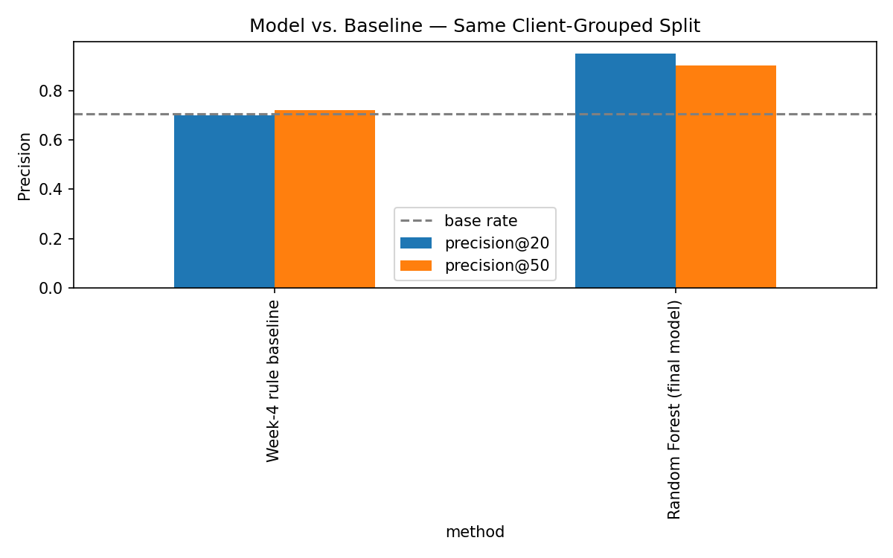
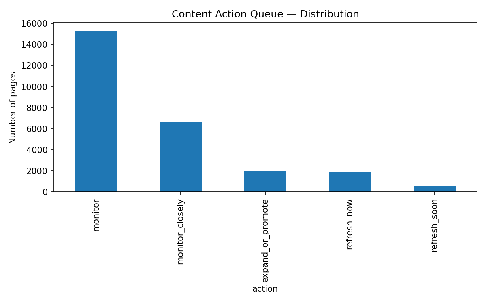

The rule content teams already use, and where it stops working
Most content review is built on a simple and reasonable rule: old pages decay, so review the oldest ones first. It is the assumption behind almost every editorial refresh calendar, and it is intuitive enough that nobody thinks to check it.
That single reversal is the reason this project exists. If age is not the signal, something else in a page's recent behavior probably is, and a model that can read several signals together should outperform a rule that reads one signal alone. The question this paper answers is narrow on purpose: given a page's search performance over the prior two months, can a model flag the pages worth reviewing this week, better than a simple hand-written score can?
The decision this supports is small and concrete. A content strategist with limited review time each week needs to know where to look first. A false alarm costs them a wasted review. A missed decline costs them traffic that is harder to win back the longer it goes unnoticed. Framed that way, this is a ranking problem before it is anything else: not "will this page decline," but "which pages deserve attention first."
What the model sees, and what it deliberately does not
This study uses the fact_content_daily_performance table from FlyRank's internship warehouse release, a pseudonymized, per-day record of search performance for each content page across a panel of internship clients. Two calendar months anchor the analysis: March 2026 supplies the feature window, and April 2026 supplies the outcome window the label is built from.
What was excluded, and why
Two exclusions shaped this dataset more than any inclusion did. The fact_content_daily_performance_sample table was set aside entirely for label design: it covers only the final month of the release, which is the natural outcome window for any past-to-future label, and using it would have meant testing on the same data used to define success.
The query-level table, fact_content_query_90d, was tested as a feature source and rejected. Its fixed 90-day window runs from April 2 to June 30, overlapping directly with the outcome month this study predicts. Any feature built from it would have let the model see into the period it was supposed to be forecasting. That table is not used anywhere in the final model.
Clients with fewer than 60 days of history inside the panel were also dropped, since the feature design needs both a prior-30 and a prior-60 window fully populated to compute momentum. No client names, domains, or raw queries appear anywhere in this paper or its underlying notebooks.
Five features, one honest split, two leaks caught and removed
The label
A page is labeled declining if its April impressions fall more than 20% below its March impressions. This is an operational proxy, not a definition of quality. A page can drop 20% and still be a fine page; a page can hold steady while quietly losing relevance the label cannot see.
Five features, each independently timed
| Feature | What it captures | Why it's safe |
|---|---|---|
imp_prev30 | Impressions, last 30 days of March | Aggregated only from dates before April 1 |
pos_prev30 | Average search position, last 30 days | Same window restriction |
ctr_prev30 | Click-through rate, last 30 days | Same window restriction |
momentum_ratio | Last 30 days' impressions vs. the 30 before them | Both halves end before April |
pos_volatility | Standard deviation of daily position, last 30 days | Computed inside the March window only |
Validation: grouped by client, not by row
Pages were split into training and test sets using GroupShuffleSplit on client ID, so that no client's pages appear on both sides of the split. A random row-level split would let the model partly memorize a client's specific traffic patterns rather than learn a signal that generalizes to a client it has never seen, which is the actual question a decision-support tool needs to answer.
The baseline
The comparison point is a hand-written rule from an earlier stage of this project: a score built from mid-range traffic volume and decent search position, thresholds chosen by inspection rather than learned. It is evaluated on the exact same client-grouped test split as the model, so the comparison in the next section is apples to apples.
The model outperforms the rule, on the same held-out clients
Base rate on the held-out test set (10 clients, unseen during training) was 0.706: about seven in ten pages in this slice were, by the 20% threshold, declining. Against that backdrop, the Random Forest model outperformed the hand-written rule at both cutoffs that matter for a limited weekly review queue.
| Method | Precision@20 | Precision@50 |
|---|---|---|
| Week-4 rule baseline | 0.70 | 0.72 |
| Random Forest (final model) | 0.95 | 0.90 |

Permutation importance on the final model pointed to ctr_prev30 and pos_volatility, the stability of a page's click-through rate and ranking, as the strongest contributors, ahead of momentum_ratio, the feature the momentum hypothesis was originally built around. Stability of recent performance carried more weight than the direction of recent change alone, an observed pattern in this sample rather than a general rule about search.
Reviewing individual errors, the clearest false negatives were pages with strong signals across the board, healthy traffic, good position, mild positive momentum, that still declined in April. That pattern suggests some declines come from causes outside these five features entirely: a competitor's new page, a seasonal shift, an update elsewhere on the site. No amount of tuning on this feature set alone would close that gap; it marks a real edge of what this model can see.
What this work cannot claim
- This is an observational study over one two-month window on one client panel. It shows a correlational pattern between prior signals and later decline, not proof that any specific action causes recovery.
- The 0.95 / 0.90 precision figures come from a test set of only 10 clients. With a panel this small, the exact decimal is sensitive to which clients happened to land in the held-out group. The consistent finding across repeated runs of this pipeline is that the model beats the rule by a meaningful margin, not the third decimal place.
- The model's decline score is a relative rank within this sample, not a calibrated real-world probability. A score of 0.94 should be read as "near the top of this queue," not "94% likely."
- The model has no visibility into competitor activity, search-engine algorithm changes, or a client's own business priorities. A page it scores as low-risk can still need attention for reasons it cannot see.
- Nothing here describes how any search engine's ranking algorithm works. Every finding is a pattern observed in this dataset, stated as directional and decision-support, not causal or universal.
From a score to a queue a person can actually work through
A probability alone is not a to-do list. The final model's output was translated into five plain-language actions with inspectable reason codes, so a reviewer can see why a page landed where it did rather than trusting a black-box number.

-
Refresh now highest priority
High predicted decline risk on pages that still carry meaningful traffic (300+ monthly impressions). These pages have proven demand worth protecting before the drop compounds.
-
Refresh soon lower urgency
High predicted decline risk, but on lower-traffic pages. Worth a look, but less is at stake if review is delayed a week.
-
Expand or promote investment candidate
Positive momentum paired with low predicted risk. Good candidates for further investment: more internal links, more distribution, deeper coverage.
-
Monitor closely
An unstable ranking history with no clear signal yet. Not urgent, but worth a closer look than the default queue gets.
-
Monitor
No strong signal in either direction. The default, lowest-priority bucket, and by far the largest.
monitor label is not the same as "definitely fine," and it should never suppress a page from future review. Nothing here should feed automated content generation without a human editor in the loop.
Rerun it yourself
Every number in this paper traces back to a notebook in the project repository, run top to bottom against the FlyRank internship warehouse with a fixed random seed (random_state=42) for the train/test split and the model.
| Notebook | What it covers |
|---|---|
work/notebooks/w03_data_contract.ipynb | Data contract, grain verification, first leakage trap |
work/notebooks/w04_baseline_score.ipynb | Hand-written rule baseline and signal checks |
work/notebooks/w05_model.ipynb | Model training, the query-table leak found and removed |
work/notebooks/w06_validation_audit.ipynb | Grouped-split audit, before/after comparison, claim review |
work/notebooks/w07_action_playbook.ipynb | Action queue, reason codes, human-review rules |
work/notebooks/capstone.ipynb | This paper's numbers and charts, end to end |
Full repository: github.com/khaled-dragon/ML-intern